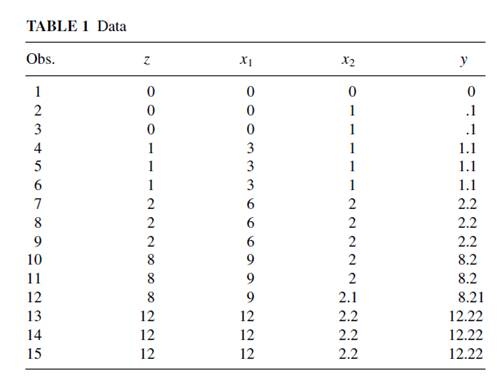
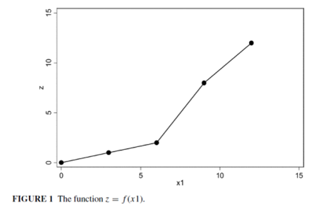
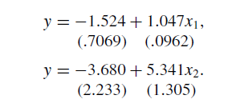
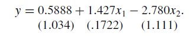
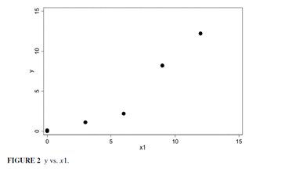
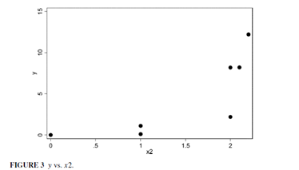
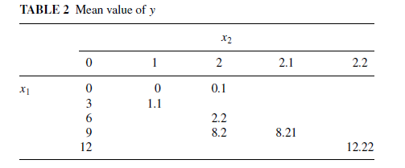

收录于合集
文献来源：
Christopher H. Achen. Let’s Put Garbage-Can Regressions and Garbage-Can Probits Where They Belong [J]. Conflict Management& Peace Science, 2005, 22(4):327-339.
作者简介：
ChristopherH. Achen，美国艺术与科学院院士、美国政治学会方法分部首任主席、普林斯顿大学政治学系罗杰威廉姆斯讲席教授、政治学定量研究方法重要奠基人。他的研究方向包括实证民主理论、美国政治、比较政治和政治学方法论。
http://www.princeton.edu/politics/people/display_person.xml?netid=achen
编者按：
近期，我们搬运的《耶鲁大学比较政治学书单》得到了读者朋友们的喜爱与好评。细心的读者可能已经发现，位列这份书单榜首的既不是经典教材，也不是前沿成果，而是一篇杀气腾腾的“檄文”。在这篇文章中，作者将那种常见的、把一大堆变量放入模型“跑”回归的研究方法痛斥为“垃圾桶回归”，声称这些研究结果本身也将被扫进统计学的垃圾桶。那么，作者何以得出如此惊世骇俗的结论，他大声疾呼的目的又在何处呢？政文观止编辑部特将这篇文章编译出来，与读者分享作者的才华、豪情与忧思。
一、 被滥用的回归分析
作者指出，在当今的国际政治研究中，民主和平论等重要理论的检验与发展都离不开统计数据，甚至许多科学理论是直接从数据中发现的。对于不同的数据类型的计算目标，统计学已经发展出最小二乘法、最大似然估计、贝叶斯估计、广义矩估计、稳健标准差等纷繁复杂的统计工具。然而，在作者看来，许多实证研究中的统计分析是非常“无脑”的：研究者将所有的疑似变量都“扔”进回归模型，通过回归系数和显著性来判断自变量是否有效，再加入控制变量来排除其他因素的影响。最终，研究者自认为构建起一个足够复杂的模型，并用一堆有显著性的变量来证明自己的假设。作者认为，这种方法不仅不符合学术规范，而且明显地违背科学。
既有的研究充分说明，这种粗暴的回归分析无法解决间接关系和三角因果结构（triangular causalstructure）。作者则进一步强调，这种回归分析不仅不能完整地揭示变量间的真实关系， 甚至会得出完全错误的因果效应 。在进行实例演算前，作者强调，定量研究者几乎把如下两个误解当成了定理：首先，他们认为，把控制变量放入回归模型就能真的控制它们的影响，从而得到自变量的合理系数。其次，他们认为，把一系列的自变量放入回归模型就能得出它们各自对因变量的效应，而从回归系数和标准差的数值上则可以判断出各个自变量的重要性，进而比较自变量所代表的不同假设的适用性。对此，作者声称， 他可以让回归分析的系数与真实情况恰好相反 ，从而让这两个误解不攻自破。
二、 不可能的实例？
为了证明自己所言非虚，作者构建了如下这个数据集：

其中，x1和x2是真正的解释因素。直观可见，x1对因变量y的效应有着轻微的非线性特点。z是有关x1的某种函数，即z = f (x1)，函数图像如下：

不难发现，y = z + 0.1x2，可见因变量可以完美地被自变量解释，而且呈现一种非常简单的线性关系。显然，这种情况下R2=1。
根据统计学原理，我们可以将等式改写成回归方程：y= α + β1z + β2x2 + u。无疑，此时的回归结果为：ˆα = 0，ˆβ1= 1，ˆβ2 = 0.1，R2=1。然而，真正的解释因素是x1和x2 ，因此，完整的回归方程是：y = α + β1f(x1)+β2x2 + u 。根据此前的两个“伪定理”，所有的自变量和控制变量都已经放入模型，回归分析的结果应当是准确而理想的。事实真的如此吗？作者分别对x1、x2以及两者同时进行了回归，结果如下（括号内为标准差）：


从参数来看，这三个模型的R2和显著性（t检验）都尚可，然而对比原方程y = z + 0.1x2 ，作者有了惊人的发现！最终模型中， x 2 的影响效应被放大了 28 倍，而且系数由正变负！
作者强调，这种错误并不是由样本数量和随机误差造成的，假如对表1进行反复抽样并生成新的大数据集，其运算结果最终也是如此。由此可见，这种“垃圾桶回归”不仅“无脑”，而且非常危险，有可能会严重误导社会科学的发展。
三 、 很绝望，能怎么办？
社会科学中的许多变量之间都有着或多或少的非线性关系，在不废除线性回归分析的前提下，我们该如何避免上文中的严重谬误呢？作者认为首先应当诉诸规范的理论模型。研究者如果熟悉既有的相关理论，那么他对于何处可能出现非线性关系应该了然于胸，因此就不该将所有的疑似变量都“扔”进回归模型。在此基础上，研究者应当在回归分析前仔细的检查和判断数据的真实趋势。
以上文的数据集为例，作者画出了因变量之于两个自变量的散点图：


显然，这两个自变量对于因变量而言都有轻微的非线性效应，因此肯定不能直接将它们放入回归模型。作者接着对这三个变量进行了交叉列表分析：

结果表明，当x1取值固定时，x2的变化会导致y发生同等比例的变化。然而当x2取值固定时，x1对y的影响却较为混乱。因此，非线性的关键问题在x1 。在这种情况下，作者尝试了许多非线性的模型（对数、指数、二次），拟合效果仍然不好。最终，作者将x1取值的中间三类设定为哑变量，才最终解决了问题。
作者指出，z = f (x1)貌似帮助我们更好地理解了自变量，但由于我们没有深究f的具体含义，这个等式事实上就已经为此后的谬误埋下了伏笔。对于两个自变量的回归分析已经如此大费周章，那么将一堆变量“扔”进回归模型无异于对研究者时间的谋杀。由于二分变量的信息噪音更多而有效信息更少，Probit和Logit模型将比常规线性回归更为难解。因此，作者断言， 真正谨慎的政治科学研究不能多于三个自变量 。
四、 回归分析的正确打开方式
作者指出，统计工具对于社会科学研究确实是必不可少而又至关重要的。然而，研究者在使用统计工具时往往会本末倒置：他们只关注运算结果中的系数与显著性，却忽视了模型设定本身的正当性。在回归分析之前，研究者必须回顾既有的规范理论，并仔细查验数据的真实趋势。
作者强调，当研究者发现自己不得不将一堆数据都“扔”进回归模型以“控制变量”时，那么很可能是数据本身的同质性出了问题：研究者极有可能把不同类别的观测值混在了一起。对此，研究者必须把观测值进行有意义的再分类。 庞大而繁杂的回归列表虽然漂亮，但在同质性基础上的小而精的统计分析才是科学进步的真正基石。
编后记：
这篇文章对于定量研究的初学者而言无异于一记警钟，相信很多童鞋和小编一样都曾是“扔”变量、“跑”回归的拥趸，读完之后是不是出了一身冷汗呢？然而，小编认为，“发现可能的关系”是“准确测量效应”的基础，因此实验性地“跑”回归并非完全不可取，但最终呈现的模型则一定要经得起考验。对于这个话题，读者朋友们是不是也有很多想法不吐不快呢，欢迎大家踊跃拍砖。